Video pretraining can teach a model to predict future states with high fidelity, yet how this knowledge translates into better performance in downstream embodied tasks is not well understood. We isolate this question in a controlled benchmark built on Conway's Game of Life, where transition dynamics are exactly known and the pretraining and RL environments share identical dynamics. In our Frame Crossing Game, an agent must navigate a 96×96 grid while avoiding live cells evolving under Game of Life rules. We pre-train a neural network via next-frame prediction, achieving near-perfect accuracy, and compare pretrained RL agents against agents trained from scratch across environment complexities (1–4 fields) and model capacities (1–4 layers).
The benefit of pretraining depends on environment complexity. At intermediate difficulty, pretrained agents converge faster and to a strictly higher performance level.
Smaller models benefit more from pretraining than larger ones. Better prediction accuracy does not automatically translate into better RL initialization.
An agent (green cell) must navigate from left to right across a 96×96 grid while avoiding live cells evolving under Conway's Game of Life rules. Complexity is controlled by overlaying 1–4 independent GoL fields, each with different rules.
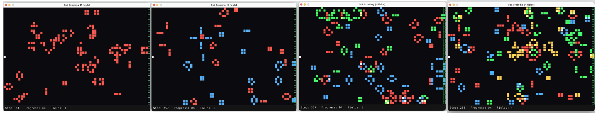
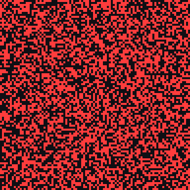
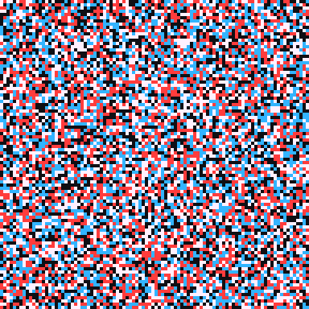
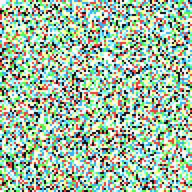
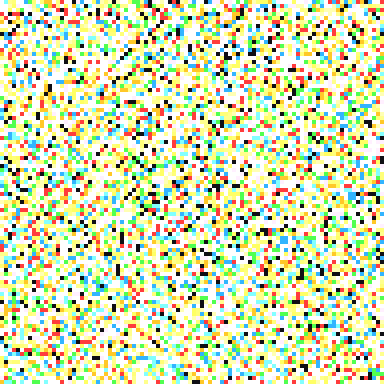
What does an agent look like before and after training? Below we compare episodes recorded at training step 100 (early) versus step 600 (late) for both scratch-trained and pretrained agents in the 2-field environment with a 2-layer model.
2 fields, 2-layer model — no pretraining
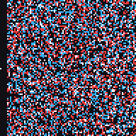
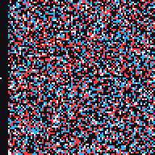
2 fields, 2-layer model — pretrained with next-frame prediction
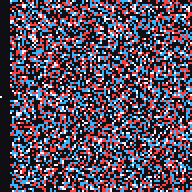
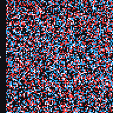
Below we show the same comparison across all four complexity levels (1-layer model). In easier environments (1 field), both approaches eventually learn. In harder environments (4 fields), neither makes much progress. The gap is most visible at intermediate difficulty.
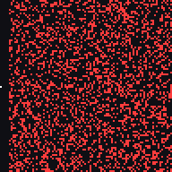
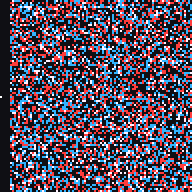
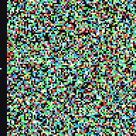
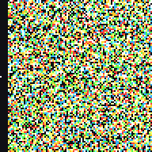
Training curves comparing pretrained (blue) and scratch (red) agents across all complexity levels (columns: 1–4 fields) and model capacities (rows: 1–4 layers). Progress is measured as the percentage of columns crossed.
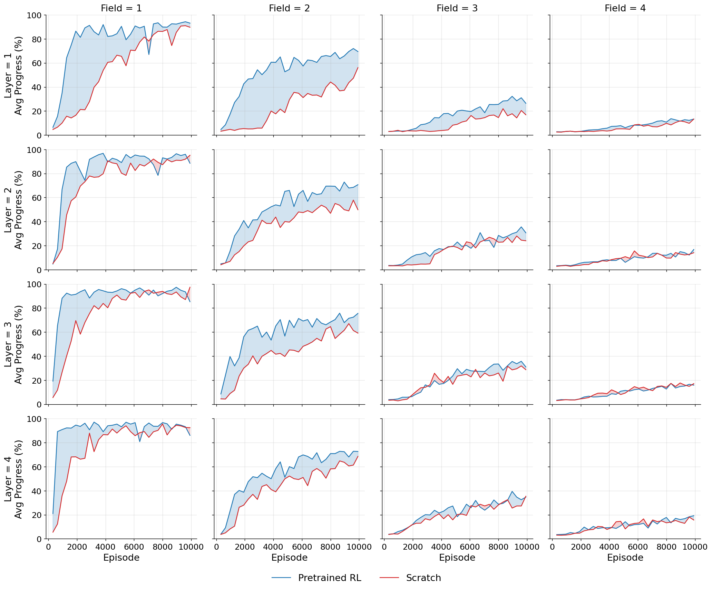
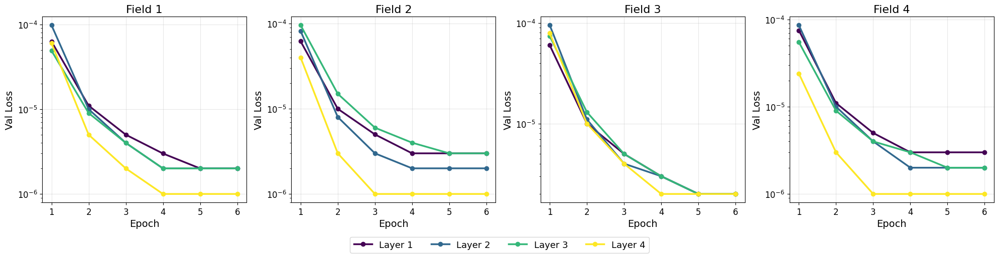
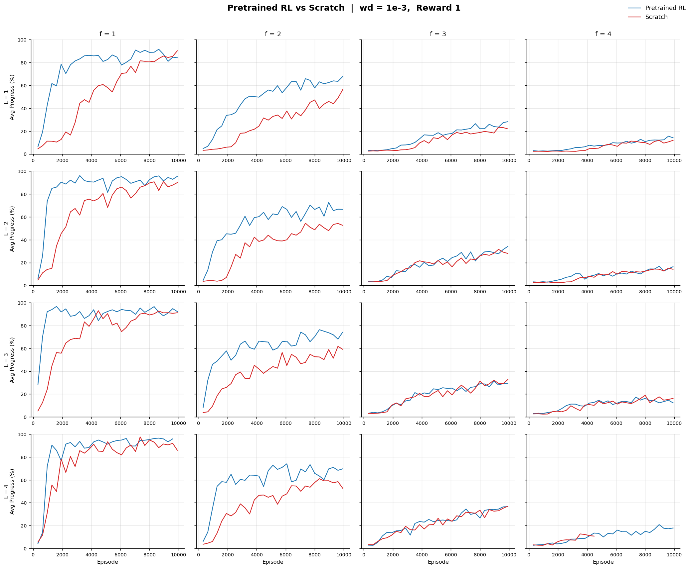
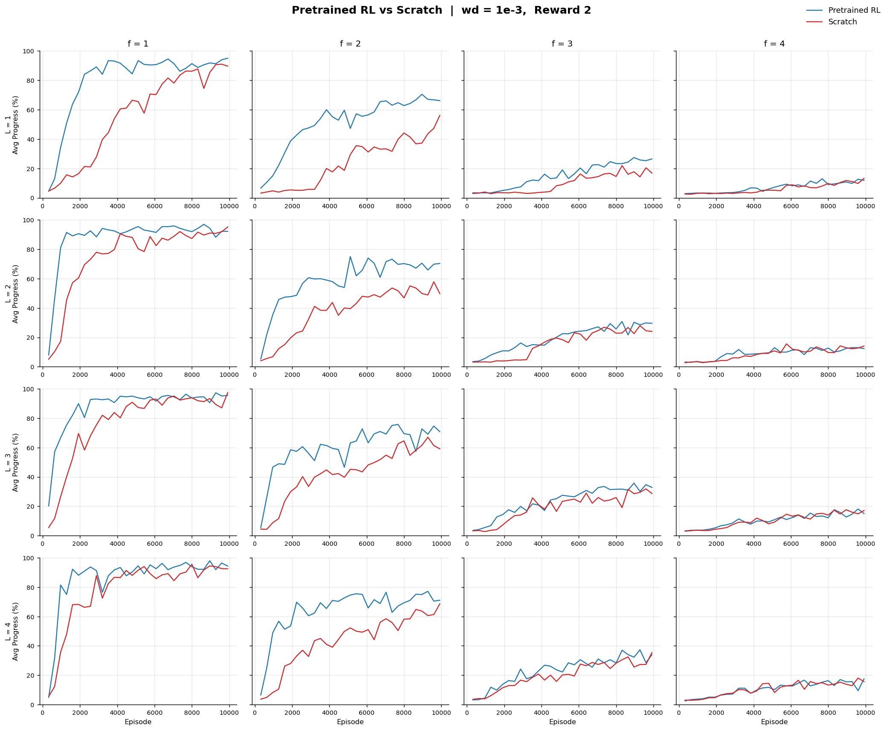
We use a transformer-based architecture for both pretraining (next-frame prediction) and RL. The model processes grid frames through patch embedding and transformer layers, producing either next-frame predictions or action distributions.
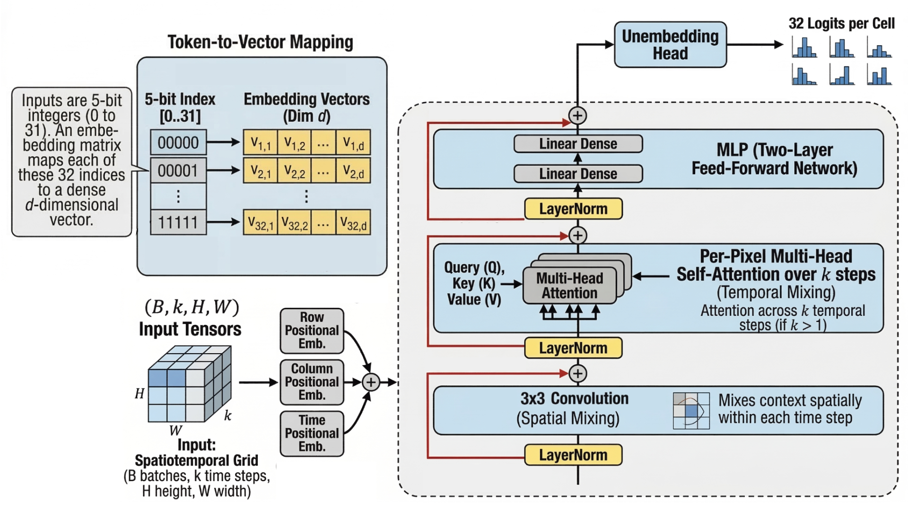
@article{el2025whenvpt,
title = {When Does Video Pretraining Help? Improving
Embodied Navigation with Next-Frame Prediction},
author = {El, Batu},
journal = {NeurIPS},
year = {2025},
url = {https://github.com/batu-el/when-vpt}
}